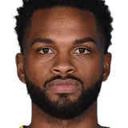
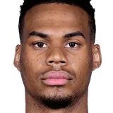

Played 2 seasons for 3 teams; his teams went 3–13 in his games.
Jump to: Record by opponent · Season by season · Teammate help
Compare Raymond Spalding with…
Final NBA finish, season by season
Title Finals Other playoffs Missed playoffs. #1 = champion; the dashed line is last place that season. Each point opens that season's final standings.
All 30 teams ranked in 2018-19, his best finish (#28)Teammate help
 Deandre Ayton0.21 season
Deandre Ayton0.21 season Jae'Sean Tate0.21 season
Jae'Sean Tate0.21 season
Career
Career records (W–L, W − L, with and without) include 2026-27 games through Nov. 25, 2026; season counts and finishes are through 2025-26. Each card opens its board in the same scope. How we count.

Latest completed seasons
Season by season
Newest first; every header sorts. Final NBA finish is the team's rank among all teams that season (#1 = champion) and opens that season's standings. "Without him" uses the team-season window; the span line counts only the games between his first and last game for the team.
| 2020-21 | #30 of 30 | 17–55 23.6% | Missed playoffs | 2 of 72 | 0–2 0.0% | 17–53 24.3%span: N/A, gap N/A | −24.3 | |
| 2018-19 | #22 of 30 | 33–49 40.2% | Missed playoffs | 1 of 82 | 0–1 0.0% | 27–37 42.2%span: N/A, gap N/A | −42.2 | |
| 2018-19 | #28 of 30 | 19–63 23.2% | Missed playoffs | 13 of 82 | 3–10 23.1% | 15–53 22.1%span: 1–2, gap −10.3 | +1.0 |
On/off, starts and close games
From the lineup data, 1996-97 on. On/off is net points per 100 possessions with him on the floor minus off, a different unit from the win-rate gaps. Started and off the bench are team records in those games; close games are those within 5 points in the last 5 minutes with him on the floor.
Teammate help by season
Help this season = Teammates Score points for honors won that season by teammates who shared a game with him, with every teammate that adds to it. Only honors won in that same season count. How help works.
- 2020-21
 Houston
Jae'Sean Tate All-Rookie 1st0.252 g
Houston
Jae'Sean Tate All-Rookie 1st0.252 g
Help this season: 0.25 = 0.25 Jae'Sean Tate
Other teammates (no honors that season): Ben McLemore 2 g, DeMarcus Cousins 2 g, John Wall 2 g, Mason Jones 2 g, Sterling Brown 2 g, David Nwaba 2 g, Danuel House 2 g, Eric Gordon 1 g, PJ Tucker 1 g, Rodions Kurucs 1 g
- 2018-19
 Dallas
Dallas
 Luka Doncic ROYAll-Rookie 1st0.751 g
Luka Doncic ROYAll-Rookie 1st0.751 g
Help this season: 0.75 = 0.75 Luka Doncic
Other teammates (no honors that season): Devin Harris 1 g, Dwight Powell 1 g, Wesley Matthews 1 g, DeAndre Jordan 1 g, Jose Juan Barea 1 g, Ryan Broekhoff 1 g, Jalen Brunson 1 g, Maxi Kleber 1 g, Dennis Smith 1 g, Dorian Finney-Smith 1 g
- 2018-19
 Phoenix
Deandre Ayton All-Rookie 1st0.258 g
Phoenix
Deandre Ayton All-Rookie 1st0.258 g
Help this season: 0.25 = 0.25 Deandre Ayton
Other teammates (no honors that season): Troy Daniels 13 g, Mikal Bridges 13 g, Dragan Bender 13 g, De'Anthony Melton 12 g, Josh Jackson 10 g, Devin Booker 10 g, Jamal Crawford 9 g, Elie Okobo 9 g, Richaun Holmes 7 g, Jimmer Fredette 6 g, Kelly Oubre 2 g, Tyler Johnson 1 g
Record against each opponent
Regular season, through 2025-26 (2026-27 games not included): 16 games, 3–13, against 13 franchises.
Grouped by franchise (named as today); game lists keep each team's name that season. Filters and the tab are kept in the URL, so a filtered view can be shared.
| Games list | |||||||
|---|---|---|---|---|---|---|---|
| 2 | 2–0 | 100.0% | +2 | N/A | 2018-19 | ||
| 2 | 0–2 | 0.0% | −2 | N/A | 2018-19 | ||
| 2 | 0–2 | 0.0% | −2 | N/A | 2018-19 to 2020-21 | ||
| 1 | 0–1 | 0.0% | −1 | N/A | 2018-19 | ||
| 1 | 1–0 | 100.0% | +1 | N/A | 2018-19 | ||
| 1 | 0–1 | 0.0% | −1 | N/A | 2018-19 | ||
| 1 | 0–1 | 0.0% | −1 | N/A | 2018-19 | ||
| 1 | 0–1 | 0.0% | −1 | N/A | 2018-19 | ||
| 1 | 0–1 | 0.0% | −1 | N/A | 2018-19 | ||
| 1 | 0–1 | 0.0% | −1 | N/A | 2020-21 | ||
| 1 | 0–1 | 0.0% | −1 | N/A | 2018-19 | ||
| 1 | 0–1 | 0.0% | −1 | N/A | 2018-19 | ||
| 1 | 0–1 | 0.0% | −1 | N/A | 2018-19 |
Rows add up to his career record in his games. A playoff series counts when he played in it; early round-robin games show as games only. How we count.
Arrival and departure
Team wins per 82 games the season before he arrived vs his first season there, and his last season vs the season after he left. He leaves a team only when his next season with games is for another team (or he never plays again); whole seasons he missed and came back from are one "Missed" row with the team's record without him. Per 82 so short seasons compare fairly. These are team records, not a measure of what he did.
| Left | after 2020-21 | 2020-21: 17–55 19.4 per 82 | 2021-22: 20–62 20.0 per 82 without him | +0.6 wins | |
| Arrived | 2020-21 | 2019-20: 44–28 50.1 per 82 | 2020-21: 17–55 19.4 per 82 | −30.8 wins | |
| Left | after 2018-19 | 2018-19: 33–49 33.0 per 82 | 2019-20: 43–32 47.0 per 82 without him | +14.0 wins | |
| Left | after 2018-19 | 2018-19: 19–63 19.0 per 82 | 2019-20: 34–39 38.2 per 82 without him | +19.2 wins | |
| Debut | 2018-19 | 2017-18: 24–58 24.0 per 82 | 2018-19: 33–49 33.0 per 82 | +9.0 wins | |
| Arrived | 2018-19 | 2017-18: 21–61 21.0 per 82 | 2018-19: 19–63 19.0 per 82 | −2.0 wins |
Seasons split between teams
Each team's record before his first game for it, inside his window (games with and without him) and after his last game, in the seasons he played for two or more teams.
With and without his teammates
His 12 teammates with the most regular-season games together. "Together" is the team's record in the games both played for it; "Without him" is the team's record in the games Raymond Spalding played for that team while the teammate was on it (between the teammate's first and last game for the team, the appearance span) and the teammate did not play. Fewer than 20 games without him: no gap. Games through Nov. 25, 2026. How we count.
 Dragan BenderPhoenix 2018-19
Dragan BenderPhoenix 2018-19- Together
- 3–10 23.1%
- Without him
- N/A N/A
- Gap
- Too few games without him
 Mikal BridgesPhoenix 2018-19
Mikal BridgesPhoenix 2018-19- Together
- 3–10 23.1%
- Without him
- N/A N/A
- Gap
- Too few games without him

Troy DanielsPhoenix 2018-19- Together
- 3–10 23.1%
- Without him
- N/A N/A
- Gap
- Too few games without him
- De'Anthony MeltonPhoenix 2018-19
- Together
- 2–10 16.7%
- Without him
- 1–0 100.0%
- Gap
- Too few games without him
 Josh JacksonPhoenix 2018-19
Josh JacksonPhoenix 2018-19- Together
- 3–7 30.0%
- Without him
- 0–3 0.0%
- Gap
- Too few games without him
- Devin BookerPhoenix 2018-19
- Together
- 2–8 20.0%
- Without him
- N/A N/A
- Gap
- Too few games without him

Elie OkoboPhoenix 2018-19- Together
- 2–7 22.2%
- Without him
- 1–3 25.0%
- Gap
- Too few games without him
 Jamal CrawfordPhoenix 2018-19
Jamal CrawfordPhoenix 2018-19- Together
- 2–7 22.2%
- Without him
- 1–3 25.0%
- Gap
- Too few games without him
- Deandre AytonPhoenix 2018-19
- Together
- 1–7 12.5%
- Without him
- N/A N/A
- Gap
- Too few games without him
 Richaun HolmesPhoenix 2018-19
Richaun HolmesPhoenix 2018-19- Together
- 1–6 14.3%
- Without him
- 1–2 33.3%
- Gap
- Too few games without him
 Jimmer FredettePhoenix 2018-19
Jimmer FredettePhoenix 2018-19- Together
- 1–5 16.7%
- Without him
- 1–2 33.3%
- Gap
- Too few games without him
 Kelly OubrePhoenix 2018-19
Kelly OubrePhoenix 2018-19- Together
- 1–1 50.0%
- Without him
- N/A N/A
- Gap
- Too few games without him